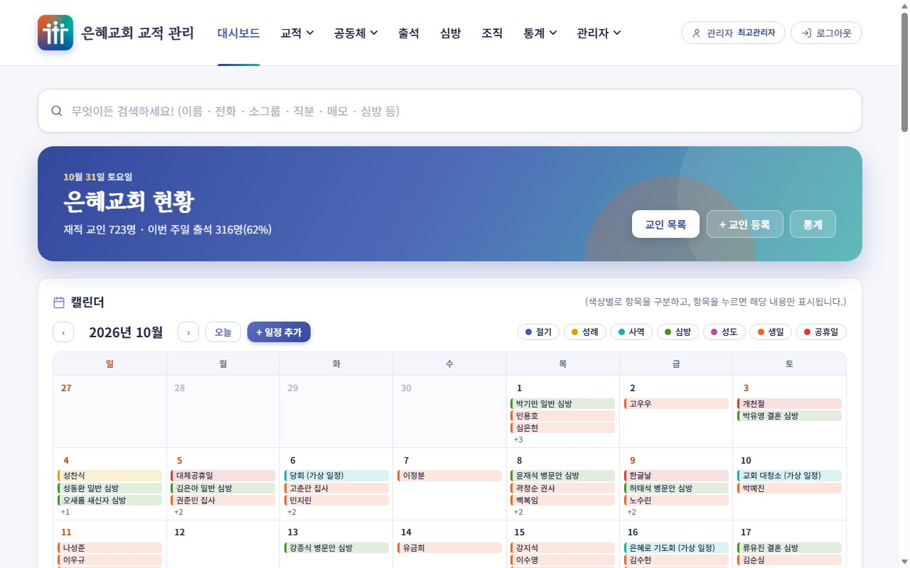
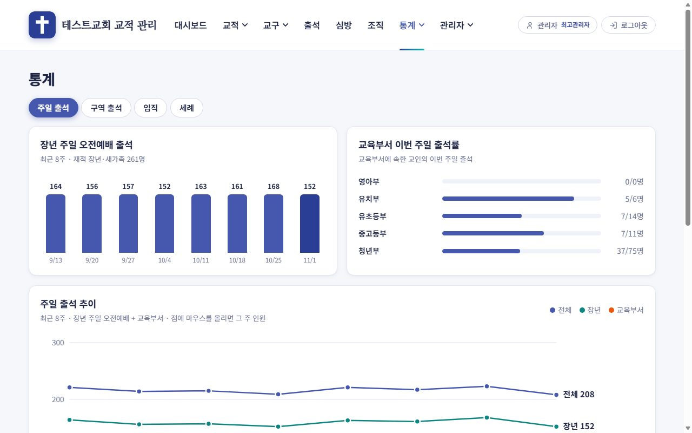
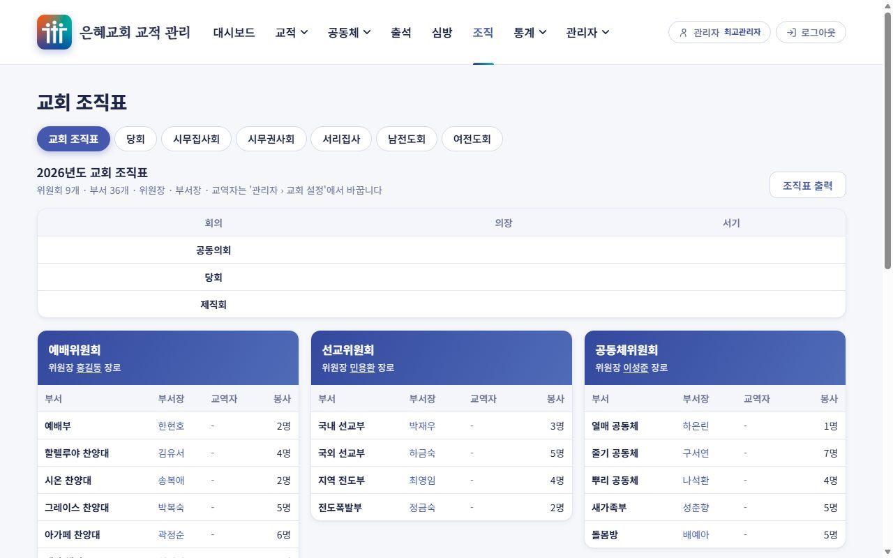
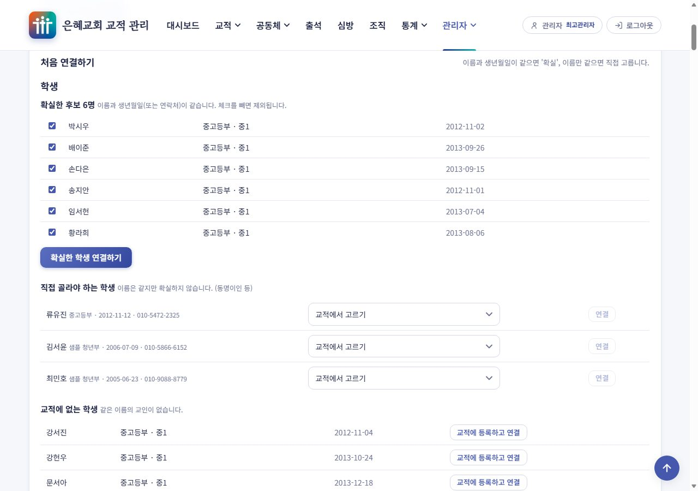

교회 교적 관리 프로그램
교인 명단, 출석, 심방, 조직, 증명서를 한 곳에서 (ch-manage)
이런 프로그램이에요
교인 명단(교적)을 관리하는 교역자와 교적 담당자를 위한 웹 프로그램입니다. cafe24와 같은 PHP + MariaDB 웹호스팅에 설치해서 사용하고, 무료로 배포합니다.
주요 기능
- 교인 목록과 교적 카드: 이름·전화·직분 무엇이든 한 번에 검색, 여러 조건 필터, 엑셀 내려받기, 사진과 재적·신급·직분 이력, 세대
- 공동체·소그룹 편성표와 명단(인쇄·엑셀·PDF), 인도자 특이사항. 소그룹 인도자는 휴대폰으로 자기 소그룹의 출석만 체크(D 등급)
- 주일 출석 체크, 오래 나오지 않은 교인 알림, 출석 추이와 통계 그래프(출석을 기록하지 않은 주일은 출석률에서 뺍니다)
- 심방 기록과 캘린더(전임 교역자만), 입원·수술 같은 일정을 심방 내용에서 자동으로
- 교회 조직표, 교적부·증명서·기부금 영수증·교인 요람 출력(증명서 번호는 서버가 겹치지 않게 부여하고 발급 대장에 기록)
- 백업 파일로 되살리기와 자동 백업, 오래된 개인정보 자동 정리
- 선택 기능: 문자 발송(솔라피), 등록카드 사진·심방 녹음으로 기록 채우기(AI) — 교회가 자기 키를 넣을 때만 켜져요
- 가입 신청을 최고관리자가 승인하고 등급(A·B·C·D)으로 정하는 접근 권한, 접속 기록
- 교회마다 다른 이름(공동체·교구, 소그룹·구역·목장·셀)과 나이 계산 방식, 교회 로고·직인·탭 아이콘을 설정으로
- 여러 명이 함께 써도 서로 덮어쓰지 않고, 휴대폰에서도 편하게



화면의 이름·전화·주소는 모두 만들어 낸 가상 자료입니다.
부서 관리 프로그램과 함께 쓰기
교회 부서(유치부·유초등부·중고등부·청년부)를 관리하는 dep-manage와 짝을 이루는 프로그램입니다. 같은 호스팅(같은 데이터베이스)에 두 개를 함께 설치하면, 교육부서 학생·교사를 교인과 연결해서 이름·연락처 같은 인적사항은 교적에서 한 번만 고치면 되고, 부서 관리의 출석은 교적 화면에서 볼 수 있어요. 따로 써도 되고, 하나를 쓰다가 나중에 다른 하나를 추가해도 돼요.

내려받기와 설치
웹호스팅의 폴더에 올리고 주소로 들어가면 설치 화면이 나옵니다. 데이터베이스 정보, 교회 이름, 관리자 계정만 입력하면 끝이에요. 배포용 zip 파일(설치 가이드 PDF 포함)을 내려받아 압축을 풀고, 호스팅에 올리면 됩니다.
체험용 ID : demo PW : 1234
가상 자료가 들어 있는 체험용 사이트예요. 누르면 자동으로 로그인되고, 관리자 화면까지 모두 볼 수 있지만 저장하거나 바꿀 수는 없어요.
이 페이지는 소개용이에요
프로그램은 PHP 서버가 있어야 동작합니다. 이 소개 페이지에서는 로그인하거나 데이터를 입력할 수 없고, 실제 사용은 직접 설치한 웹호스팅에서 하게 됩니다. 교인 정보는 민감한 개인정보라서, 교회마다 자기 호스팅에 직접 설치해서 씁니다.
제작: byraju/문의 : byraju@naver.com